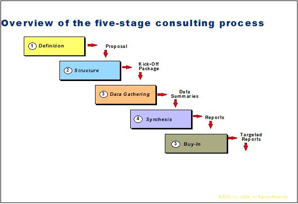
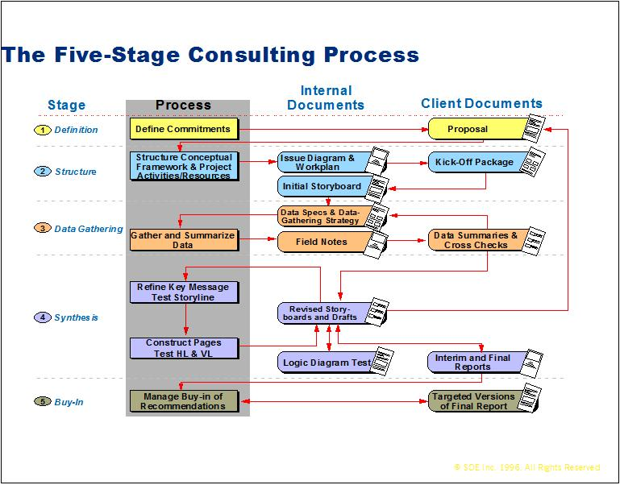
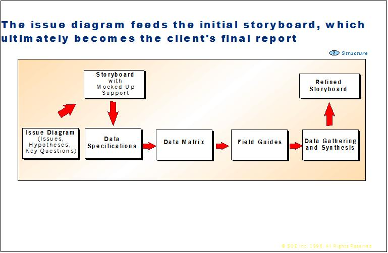
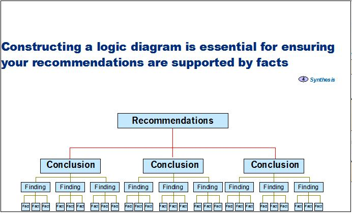
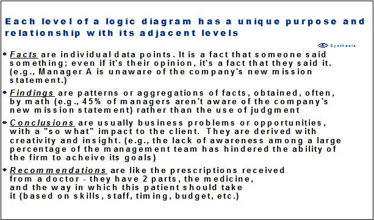
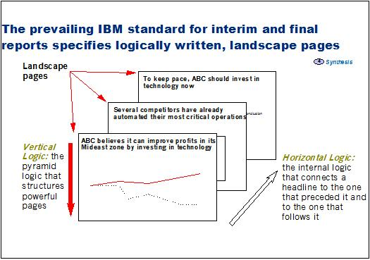
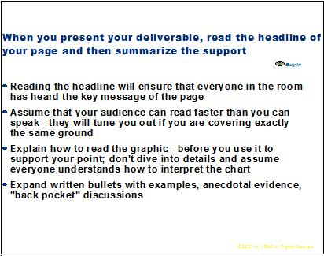

| Guideline: Report Creation |
 |
|
1 Report Creation OverviewThe final report is the key client deliverable in a consulting engagement and is a continuation of the issue-based consulting process. It is important that the structuring of the final report begins early in the engagement. This will serve to focus the engagement team on the client objectives and issues and add to the efficiency of the work effort. The synthesis and analysis of information gathered through interviews, focus groups, observations or client documentation drive the content of the final report. This information will test the working hypotheses developed for the engagement thereby deriving conclusions. Recommendations can then be generated based on these conclusions which have a strong logical tie to the facts and findings uncovered in the engagement. The objective of the final report is to cause the client to act based upon the clear, concise and logical presentation of recommendations to address his issues. Therefore it is essential that the report be written with an action-oriented tone and a sense of urgency. Quality report writing must follow an exacting and rigorous discipline of conception, design writing, and rewriting and checking, after the preliminary thinking and data analysis has been completed. As a rule of thumb 25% of the time allocated to the engagement will be spent on report writing to fulfill this tedious and time-consuming but necessary process. 2 Context of UseThe technique covered in this paper is intended both for the structuring and design of interim and final reports, such as:
and for creating the intermediate work products which compose them such as:
3 Report Creation StagesReport creation is the last 2 stages of the issue-based consulting process shown in figure 1. (For information regarding first 3 stages please see Issue-Based Consulting Process Technique Paper)  Figure 1  Figure 2 4 Report Creation Stages of Consulting Process4.1 Step four: SynthesisAfter the facts have been gathered, they have to be synthesized before they can be used for analysis. The initial steps of this stage are somewhat mechanical and simple. Each individual element of data gather must be sorted back to the question, which triggered its collection. These facts are then classified, sequenced and summarized by comparison with key and check questions to become findings. A finding is a pattern or aggregation of facts, which support a single point. Findings summarize several facts; they do not interpret the information or explain possible implications and our often obtain by math rather than by judgment. It is critical that the findings be able to stand up to any test of validity since it is the foundation of the problem solving logic from which conclusions and recommendations will be derived.  Figure 3 These findings should then be synthesized and integrated into the issue diagram where they are then used to test hypotheses. As the hypotheses are either accepted or modified they become conclusions. Unlike the initial synthesis process, which tends to be somewhat mechanical, the deriving of conclusions is dependent upon the judgment and insights of the consultants. The purposes of conclusions are to interpret what is meant by one ore more findings, and dramatically communicate the impact on the client’s operation. The test of an effective conclusion is how well it answers the ‘so what?’ question about the findings that support it. If the conclusion does not answer the ‘so what?’ question, it effectively weakens the logical linkage and impact of your recommendations and therefore should be reworked or discarded. These conclusions are then used to revise the initial report storyboard key messages and headlines that were created using the working hypotheses during the structuring stage of the engagement (see figure 3). In addition, these synthesized facts, findings and conclusions should be constructed into a logic diagram to ensure that the conclusions and recommendations are logically supported (see figures 4,5). The process of developing recommendations is the most creative phase of the process. Based on the derived conclusions the engagement team should develop several alternate recommendations to address the problem or manifest the opportunity uncovered in the conclusion. For each of the recommendations developed, the engagement team should identify its benefits and position it against client constraints. The issue and logic diagrams should be referred to throughout the entire process to ensure that all client issues for the engagement are being addressed, and that there is strong logical linkage from issues to recommendations.  Figure 4  Figure 5 4.1.1 Report Structure and SyntaxThe preliminary structure of the report is established early in the engagement when the working hypotheses have been established. Overall the report will have a top down structure with the main idea of the report broken down into supporting chapters. The chapters contain landscape pages with headlines that initially are the working hypotheses with the outline for supporting details as the body of the page (see figure 6).  Figure 6 The hypotheses serve as placeholders for the headlines for each chart that will be the conclusion derived from the engagement with the supporting findings in the body. This layout for report writing is the prevailing standard for interim and final reports, and provides both vertical and horizontal logic. Vertical logic is intra page pyramid logic where the details in the body of the page serve as support of the headline for the page. Horizontal logic is inter page logic where the headlines between pages are interconnected and ideally could serve as an executive summary and the story line of the report when read sequentially. Headlines should be full sentences that summarizes and provides the ‘so what’ of the page. The detail of the page can be full sentences, phrases or graphics that fully explains why the headline is true. Both the horizontal and vertical logic of the report should be should be constantly revisited as the report is being developed to ensure that the story line is solid and the supporting details are relevant and valid. Below are some questions that should be asked when checking report logic:
Where possible the use of graphics to depict supporting details should be considered to enhance the communications of ideas. 4.2 Step five: Buy inThe objectives of the presentation of the final report to the client is to,
In preparation for delivering final report it is important that there is a clear understanding of how best to present information to client considering such things as presentation preferences, need for detail or brevity, prior awareness of engagement results, key action motivators or inhibitors, etc. In addition, figure 7 depicts some fundamental presentation considerations.  Figure 7 As part of the data synthesis process it is important that a system for organizing, storing and retrieving data is deployed at the beginning of this process. To assist in the development and data management of issues, hypotheses and questions the SCI Issue Analyzer Tool has been developed. For further information regarding this tool please review SCI Issue Analyzer Tool Guide technique paper. 5 EducationBefore using Issue-Based consulting in a client engagement we recommend that you attend either PCW - Professional Consulting Workshop or XPCW - Experienced Professional Consulting Workshop to obtain a complete education on issue-based consulting. |
| © Copyright IBM Corp. 1987, 2012 All Rights Reserved Property of IBM These materials are intended only for use as part of an IBM engagement |